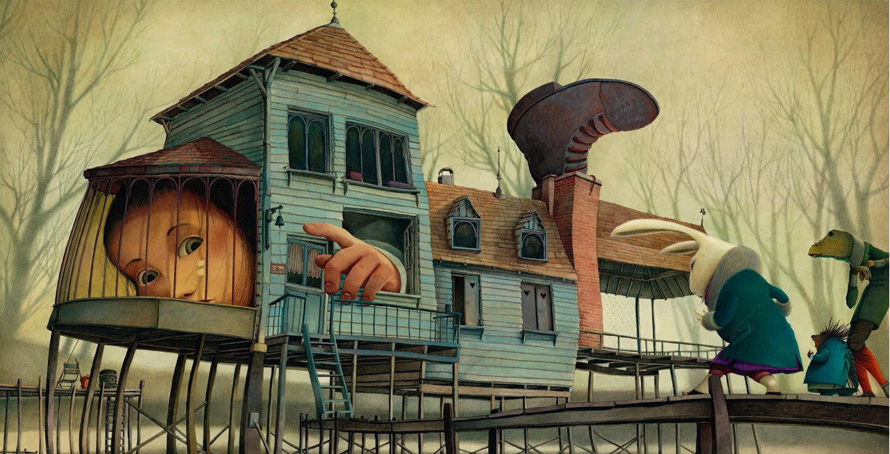
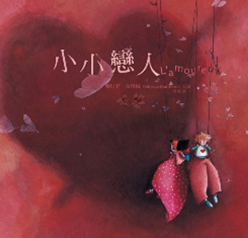

被遺忘的公主 Les princesses 2004出版
你認識青蛙公主嗎 ？
你見過馬杜芙公主嗎？
是否在暗夜裡與夜公主擦身而過？
是否與愛死博閱公主閒聊寒暄？
是否看過若馬．吉普賽公主，或祖魯．爵士迷公主繞著篝火跳舞？
四分之一月亮公主，多雷米公主，中國蜉蝣公主，許許多多公主都喜歡隱身在深宮幽殿或高閣
華樓之中。因為實在藏得太好，有些甚至就此忘記了自己的身分。
這些公主值得上窮碧落下黃泉去尋找。
現在，擺在你面前的這本手冊，知無不言地將這些陌生無名、消逝隱匿的公主介紹給大家。

小小戀人
L’amoureux
出版日期：2003
大鼻子情聖
Cyrano
出版日期：2005
愛麗絲漫遊奇境
Alice au pays des Merveilles
出版日期：2010